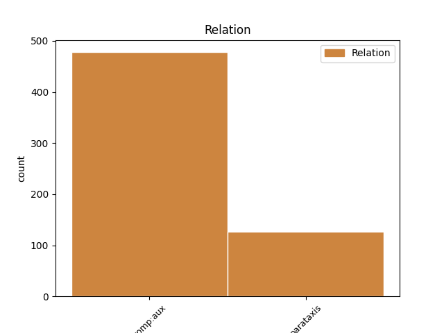
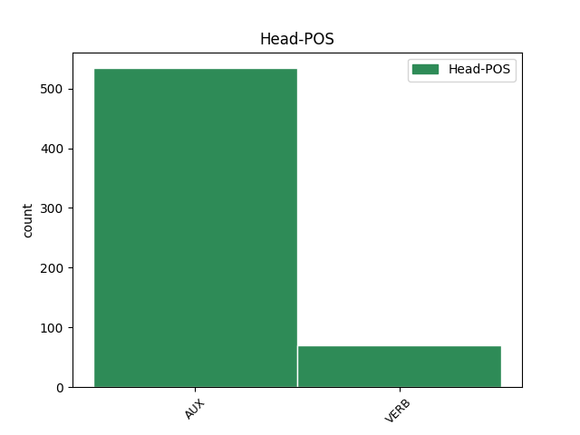
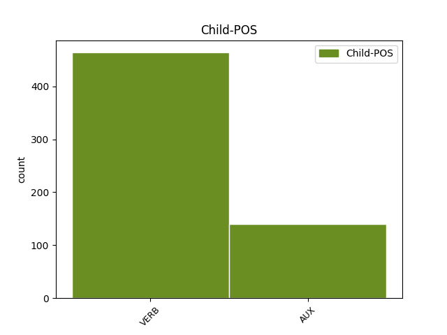

Distribution of features within this leaf



Agreement Rules sorted by frequency.
- When the dependent token is the complement for auxiliary(comp:aux) of the head token, and the dependent token is VERB.
1 It _ _ _ _ 0 _ _ _
2 is _ _ _ _ 0 _ _ _
3 much _ _ _ _ 0 _ _ _
4 easier _ _ _ _ 0 _ _ _
5 to _ _ _ _ 0 _ _ _
6 prepare _ _ _ _ 0 _ _ _
7 than _ _ _ _ 0 _ _ _
8 rice _ _ _ _ 0 _ _ _
9 and _ _ _ _ 0 _ _ _
10 is be AUX VBZ Mood=Ind|Number=Sing|Person=3|Tense=Pres|VerbForm=Fin 0 _ _ _
11 rapidly _ _ _ _ 0 _ _ _
12 gaining gain VERB VBG Tense=Pres|VerbForm=Part 10 comp:aux _ _
13 in _ _ _ _ 0 _ _ _
14 popularity _ _ _ _ 0 _ _ _
15 , _ _ _ _ 0 _ _ _
16 especially _ _ _ _ 0 _ _ _
17 among _ _ _ _ 0 _ _ _
18 vegetarians _ _ _ _ 0 _ _ _
19 who _ _ _ _ 0 _ _ _
20 value _ _ _ _ 0 _ _ _
21 its _ _ _ _ 0 _ _ _
22 high _ _ _ _ 0 _ _ _
23 protein _ _ _ _ 0 _ _ _
24 levels _ _ _ _ 0 _ _ _
25 . _ _ _ _ 0 _ _ _
1 You _ _ _ _ 0 _ _ _
2 do do AUX VBP Mood=Ind|Tense=Pres|VerbForm=Fin 0 _ _ _
3 n't _ _ _ _ 0 _ _ _
4 need _ _ _ _ 0 _ _ _
5 flying _ _ _ _ 0 _ _ _
6 broomsticks _ _ _ _ 0 _ _ _
7 or _ _ _ _ 0 _ _ _
8 magic _ _ _ _ 0 _ _ _
9 balls _ _ _ _ 0 _ _ _
10 to _ _ _ _ 0 _ _ _
11 play _ _ _ _ 0 _ _ _
12 this _ _ _ _ 0 _ _ _
13 version _ _ _ _ 0 _ _ _
14 of _ _ _ _ 0 _ _ _
15 the _ _ _ _ 0 _ _ _
16 game _ _ _ _ 0 _ _ _
17 - _ _ _ _ 0 _ _ _
18 it _ _ _ _ 0 _ _ _
19 's be AUX VBZ Mood=Ind|Number=Sing|Person=3|Tense=Pres|VerbForm=Fin 2 parataxis _ _
20 tailor-made _ _ _ _ 0 _ _ _
21 for _ _ _ _ 0 _ _ _
22 muggles _ _ _ _ 0 _ _ _
23 like _ _ _ _ 0 _ _ _
24 us _ _ _ _ 0 _ _ _
25 . _ _ _ _ 0 _ _ _
1 They _ _ _ _ 0 _ _ _
2 compensate compensate VERB VBP Mood=Ind|Tense=Pres|VerbForm=Fin 0 _ _ _
3 for _ _ _ _ 0 _ _ _
4 this _ _ _ _ 0 _ _ _
5 by _ _ _ _ 0 _ _ _
6 creating _ _ _ _ 0 _ _ _
7 the _ _ _ _ 0 _ _ _
8 impression _ _ _ _ 0 _ _ _
9 that _ _ _ _ 0 _ _ _
10 they _ _ _ _ 0 _ _ _
11 have _ _ _ _ 0 _ _ _
12 a _ _ _ _ 0 _ _ _
13 lot _ _ _ _ 0 _ _ _
14 of _ _ _ _ 0 _ _ _
15 friends _ _ _ _ 0 _ _ _
16 - _ _ _ _ 0 _ _ _
17 they _ _ _ _ 0 _ _ _
18 have have VERB VBP Mood=Ind|Tense=Pres|VerbForm=Fin 2 parataxis _ _
19 a _ _ _ _ 0 _ _ _
20 ' _ _ _ _ 0 _ _ _
21 quantity _ _ _ _ 0 _ _ _
22 , _ _ _ _ 0 _ _ _
23 not _ _ _ _ 0 _ _ _
24 quality _ _ _ _ 0 _ _ _
25 ' _ _ _ _ 0 _ _ _
26 mentality _ _ _ _ 0 _ _ _
27 . _ _ _ _ 0 _ _ _
1 Ever _ _ _ _ 0 _ _ _
2 since _ _ _ _ 0 _ _ _
3 the _ _ _ _ 0 _ _ _
4 industrial _ _ _ _ 0 _ _ _
5 revolution _ _ _ _ 0 _ _ _
6 brought _ _ _ _ 0 _ _ _
7 a _ _ _ _ 0 _ _ _
8 massive _ _ _ _ 0 _ _ _
9 influx _ _ _ _ 0 _ _ _
10 of _ _ _ _ 0 _ _ _
11 workforce _ _ _ _ 0 _ _ _
12 , _ _ _ _ 0 _ _ _
13 Łódź _ _ _ _ 0 _ _ _
14 had have AUX VBD Mood=Ind|Tense=Past|VerbForm=Fin 0 _ _ _
15 been be AUX VBN Tense=Past|VerbForm=Part 14 comp:aux _ _
16 a _ _ _ _ 0 _ _ _
17 city _ _ _ _ 0 _ _ _
18 almost _ _ _ _ 0 _ _ _
19 equally _ _ _ _ 0 _ _ _
20 divided _ _ _ _ 0 _ _ _
21 between _ _ _ _ 0 _ _ _
22 four _ _ _ _ 0 _ _ _
23 cultures _ _ _ _ 0 _ _ _
24 - _ _ _ _ 0 _ _ _
25 Polish _ _ _ _ 0 _ _ _
26 , _ _ _ _ 0 _ _ _
27 Jewish _ _ _ _ 0 _ _ _
28 , _ _ _ _ 0 _ _ _
29 German _ _ _ _ 0 _ _ _
30 and _ _ _ _ 0 _ _ _
31 Russian _ _ _ _ 0 _ _ _
32 . _ _ _ _ 0 _ _ _
Disagree Examples:
1 While _ _ _ _ 0 _ _ _
2 studies _ _ _ _ 0 _ _ _
3 of _ _ _ _ 0 _ _ _
4 the _ _ _ _ 0 _ _ _
5 psychology _ _ _ _ 0 _ _ _
6 of _ _ _ _ 0 _ _ _
7 art _ _ _ _ 0 _ _ _
8 have have AUX VBP Mood=Ind|Tense=Pres|VerbForm=Fin 0 _ _ _
9 focused focus VERB VBN Tense=Past|VerbForm=Part 8 comp:aux _ _
10 on _ _ _ _ 0 _ _ _
11 individual _ _ _ _ 0 _ _ _
12 works _ _ _ _ 0 _ _ _
13 and _ _ _ _ 0 _ _ _
14 distinctions _ _ _ _ 0 _ _ _
15 between _ _ _ _ 0 _ _ _
16 representative _ _ _ _ 0 _ _ _
17 / _ _ _ _ 0 _ _ _
18 non-representative _ _ _ _ 0 _ _ _
19 topics _ _ _ _ 0 _ _ _
20 , _ _ _ _ 0 _ _ _
21 no _ _ _ _ 0 _ _ _
22 work _ _ _ _ 0 _ _ _
23 has _ _ _ _ 0 _ _ _
24 been _ _ _ _ 0 _ _ _
25 completed _ _ _ _ 0 _ _ _
26 on _ _ _ _ 0 _ _ _
27 the _ _ _ _ 0 _ _ _
28 aesthetic _ _ _ _ 0 _ _ _
29 appreciation _ _ _ _ 0 _ _ _
30 of _ _ _ _ 0 _ _ _
31 collections _ _ _ _ 0 _ _ _
32 or _ _ _ _ 0 _ _ _
33 of _ _ _ _ 0 _ _ _
34 devotional _ _ _ _ 0 _ _ _
35 themes _ _ _ _ 0 _ _ _
36 . _ _ _ _ 0 _ _ _
1 While _ _ _ _ 0 _ _ _
2 studies _ _ _ _ 0 _ _ _
3 of _ _ _ _ 0 _ _ _
4 the _ _ _ _ 0 _ _ _
5 psychology _ _ _ _ 0 _ _ _
6 of _ _ _ _ 0 _ _ _
7 art _ _ _ _ 0 _ _ _
8 have _ _ _ _ 0 _ _ _
9 focused _ _ _ _ 0 _ _ _
10 on _ _ _ _ 0 _ _ _
11 individual _ _ _ _ 0 _ _ _
12 works _ _ _ _ 0 _ _ _
13 and _ _ _ _ 0 _ _ _
14 distinctions _ _ _ _ 0 _ _ _
15 between _ _ _ _ 0 _ _ _
16 representative _ _ _ _ 0 _ _ _
17 / _ _ _ _ 0 _ _ _
18 non-representative _ _ _ _ 0 _ _ _
19 topics _ _ _ _ 0 _ _ _
20 , _ _ _ _ 0 _ _ _
21 no _ _ _ _ 0 _ _ _
22 work _ _ _ _ 0 _ _ _
23 has have AUX VBZ Mood=Ind|Number=Sing|Person=3|Tense=Pres|VerbForm=Fin 0 _ _ _
24 been be AUX VBN Tense=Past|VerbForm=Part 23 comp:aux _ _
25 completed _ _ _ _ 0 _ _ _
26 on _ _ _ _ 0 _ _ _
27 the _ _ _ _ 0 _ _ _
28 aesthetic _ _ _ _ 0 _ _ _
29 appreciation _ _ _ _ 0 _ _ _
30 of _ _ _ _ 0 _ _ _
31 collections _ _ _ _ 0 _ _ _
32 or _ _ _ _ 0 _ _ _
33 of _ _ _ _ 0 _ _ _
34 devotional _ _ _ _ 0 _ _ _
35 themes _ _ _ _ 0 _ _ _
36 . _ _ _ _ 0 _ _ _
1 In _ _ _ _ 0 _ _ _
2 this _ _ _ _ 0 _ _ _
3 paper _ _ _ _ 0 _ _ _
4 , _ _ _ _ 0 _ _ _
5 we _ _ _ _ 0 _ _ _
6 report _ _ _ _ 0 _ _ _
7 upon _ _ _ _ 0 _ _ _
8 the _ _ _ _ 0 _ _ _
9 novel _ _ _ _ 0 _ _ _
10 insights _ _ _ _ 0 _ _ _
11 eye-tracking _ _ _ _ 0 _ _ _
12 techniques _ _ _ _ 0 _ _ _
13 have have AUX VBP Mood=Ind|Tense=Pres|VerbForm=Fin 0 _ _ _
14 provided provide VERB VBN Tense=Past|VerbForm=Part 13 comp:aux _ _
15 into _ _ _ _ 0 _ _ _
16 the _ _ _ _ 0 _ _ _
17 unconscious _ _ _ _ 0 _ _ _
18 processes _ _ _ _ 0 _ _ _
19 of _ _ _ _ 0 _ _ _
20 viewing _ _ _ _ 0 _ _ _
21 the _ _ _ _ 0 _ _ _
22 unique _ _ _ _ 0 _ _ _
23 collection _ _ _ _ 0 _ _ _
24 of _ _ _ _ 0 _ _ _
25 Zurbarán _ _ _ _ 0 _ _ _
26 artworks _ _ _ _ 0 _ _ _
27 . _ _ _ _ 0 _ _ _
1 Previous _ _ _ _ 0 _ _ _
2 eye _ _ _ _ 0 _ _ _
3 tracking _ _ _ _ 0 _ _ _
4 research _ _ _ _ 0 _ _ _
5 has have AUX VBZ Mood=Ind|Number=Sing|Person=3|Tense=Pres|VerbForm=Fin 0 _ _ _
6 highlighted highlight VERB VBN Tense=Past|VerbForm=Part 5 comp:aux _ _
7 the _ _ _ _ 0 _ _ _
8 potential _ _ _ _ 0 _ _ _
9 to _ _ _ _ 0 _ _ _
10 transform _ _ _ _ 0 _ _ _
11 the _ _ _ _ 0 _ _ _
12 ways _ _ _ _ 0 _ _ _
13 we _ _ _ _ 0 _ _ _
14 understand _ _ _ _ 0 _ _ _
15 visual _ _ _ _ 0 _ _ _
16 processing _ _ _ _ 0 _ _ _
17 in _ _ _ _ 0 _ _ _
18 the _ _ _ _ 0 _ _ _
19 arts _ _ _ _ 0 _ _ _
20 ( _ _ _ _ 0 _ _ _
21 see _ _ _ _ 0 _ _ _
22 for _ _ _ _ 0 _ _ _
23 example _ _ _ _ 0 _ _ _
24 Brieber _ _ _ _ 0 _ _ _
25 2014 _ _ _ _ 0 _ _ _
26 ; _ _ _ _ 0 _ _ _
27 Binderman _ _ _ _ 0 _ _ _
28 et _ _ _ _ 0 _ _ _
29 al. _ _ _ _ 0 _ _ _
30 , _ _ _ _ 0 _ _ _
31 2005 _ _ _ _ 0 _ _ _
32 ) _ _ _ _ 0 _ _ _
33 and _ _ _ _ 0 _ _ _
34 at _ _ _ _ 0 _ _ _
35 the _ _ _ _ 0 _ _ _
36 same _ _ _ _ 0 _ _ _
37 time _ _ _ _ 0 _ _ _
38 offers _ _ _ _ 0 _ _ _
39 a _ _ _ _ 0 _ _ _
40 direct _ _ _ _ 0 _ _ _
41 way _ _ _ _ 0 _ _ _
42 of _ _ _ _ 0 _ _ _
43 studying _ _ _ _ 0 _ _ _
44 several _ _ _ _ 0 _ _ _
45 important _ _ _ _ 0 _ _ _
46 factors _ _ _ _ 0 _ _ _
47 of _ _ _ _ 0 _ _ _
48 a _ _ _ _ 0 _ _ _
49 museum _ _ _ _ 0 _ _ _
50 visit _ _ _ _ 0 _ _ _
51 ( _ _ _ _ 0 _ _ _
52 Filippini _ _ _ _ 0 _ _ _
53 Fantoni _ _ _ _ 0 _ _ _
54 et _ _ _ _ 0 _ _ _
55 al. _ _ _ _ 0 _ _ _
56 , _ _ _ _ 0 _ _ _
57 2013 _ _ _ _ 0 _ _ _
58 ; _ _ _ _ 0 _ _ _
59 Heidenreich _ _ _ _ 0 _ _ _
60 & _ _ _ _ 0 _ _ _
61 Turano _ _ _ _ 0 _ _ _
62 2011 _ _ _ _ 0 _ _ _
63 ; _ _ _ _ 0 _ _ _
64 Milekic _ _ _ _ 0 _ _ _
65 2010 _ _ _ _ 0 _ _ _
66 ) _ _ _ _ 0 _ _ _
67 . _ _ _ _ 0 _ _ _
1 Zurbarán _ _ _ _ 0 _ _ _
2 ’s _ _ _ _ 0 _ _ _
3 cycle _ _ _ _ 0 _ _ _
4 of _ _ _ _ 0 _ _ _
5 Jacob _ _ _ _ 0 _ _ _
6 and _ _ _ _ 0 _ _ _
7 his _ _ _ _ 0 _ _ _
8 Sons _ _ _ _ 0 _ _ _
9 has have AUX VBZ Mood=Ind|Number=Sing|Person=3|Tense=Pres|VerbForm=Fin 0 _ _ _
10 been be AUX VBN Tense=Past|VerbForm=Part 9 comp:aux _ _
11 on _ _ _ _ 0 _ _ _
12 display _ _ _ _ 0 _ _ _
13 in _ _ _ _ 0 _ _ _
14 the _ _ _ _ 0 _ _ _
15 Long _ _ _ _ 0 _ _ _
16 Room _ _ _ _ 0 _ _ _
17 at _ _ _ _ 0 _ _ _
18 Auckland _ _ _ _ 0 _ _ _
19 Castle _ _ _ _ 0 _ _ _
20 for _ _ _ _ 0 _ _ _
21 over _ _ _ _ 0 _ _ _
22 250 _ _ _ _ 0 _ _ _
23 years _ _ _ _ 0 _ _ _
24 . _ _ _ _ 0 _ _ _